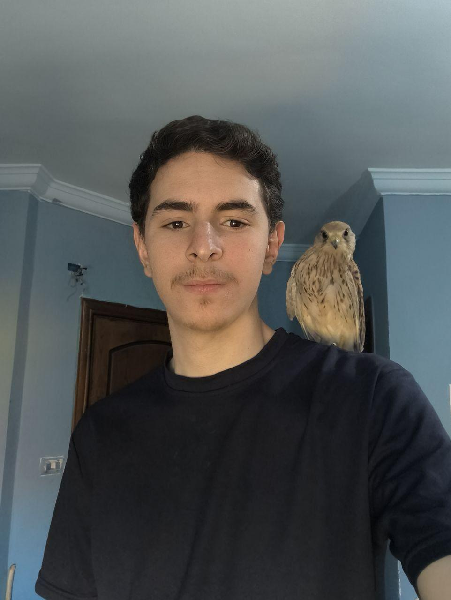
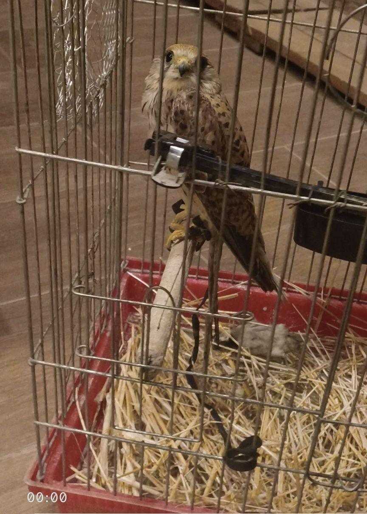
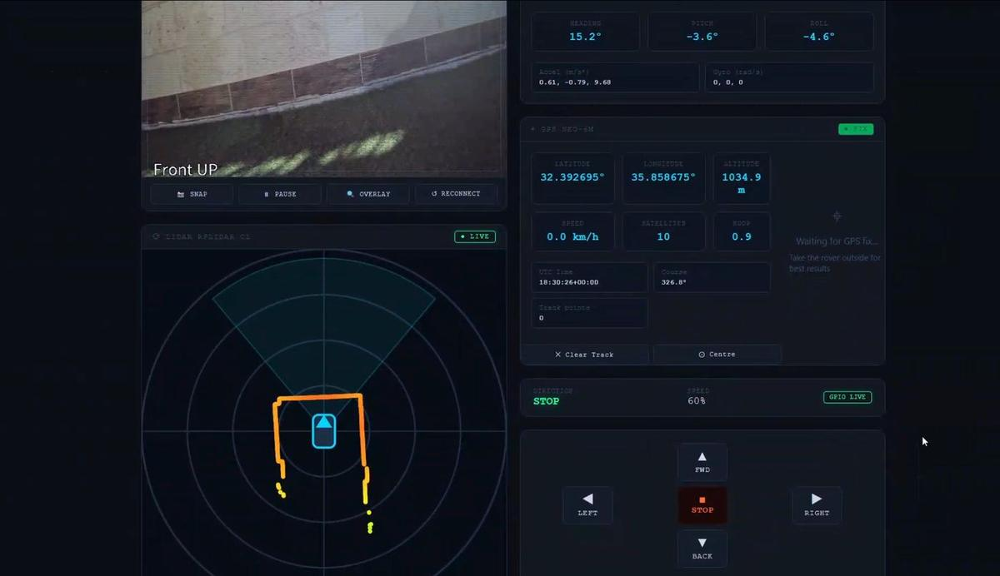
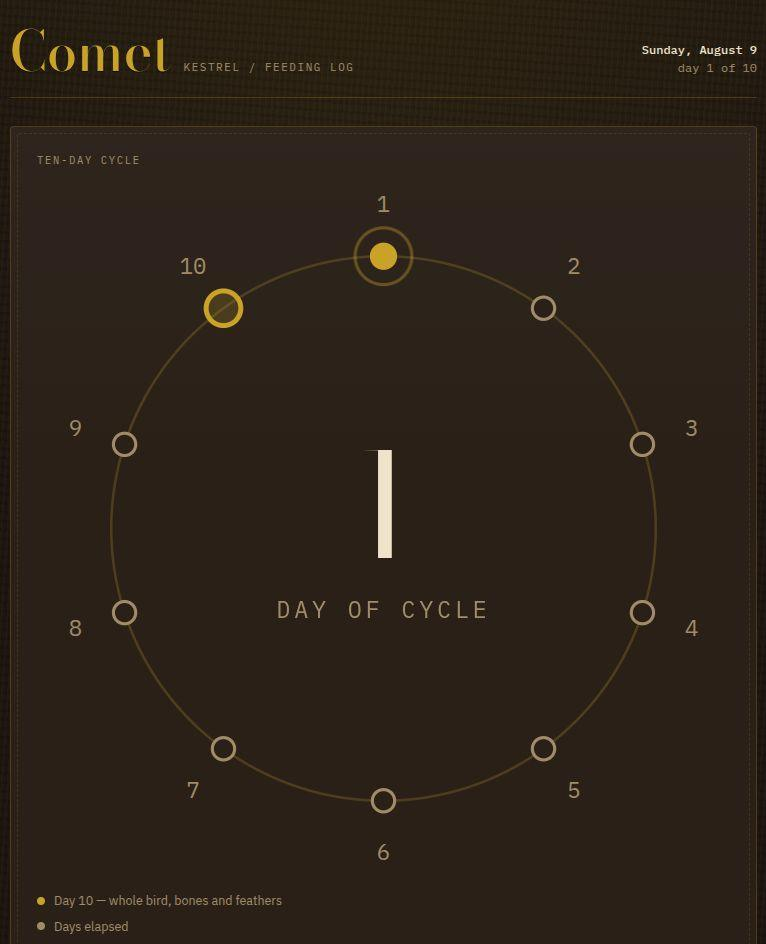
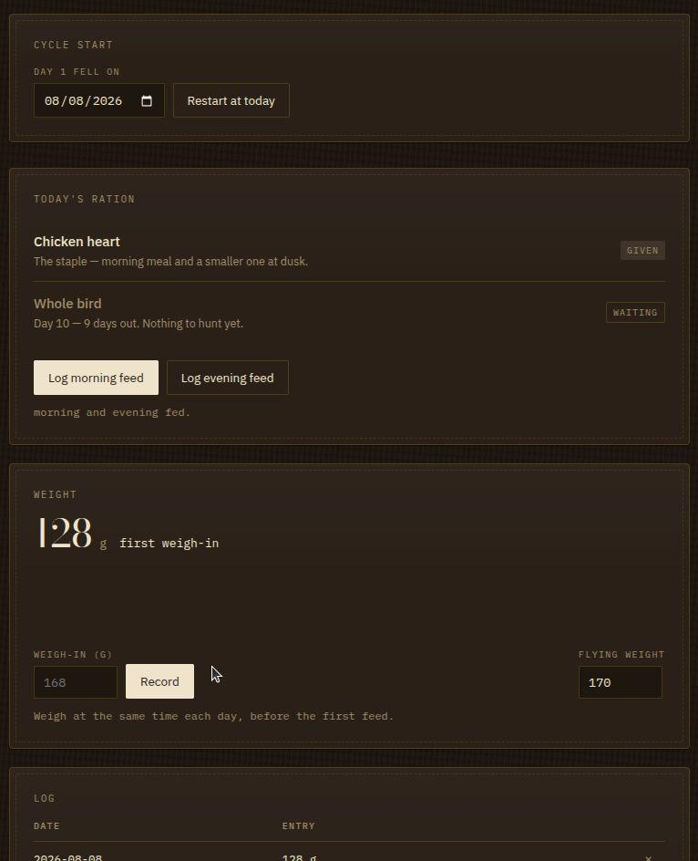
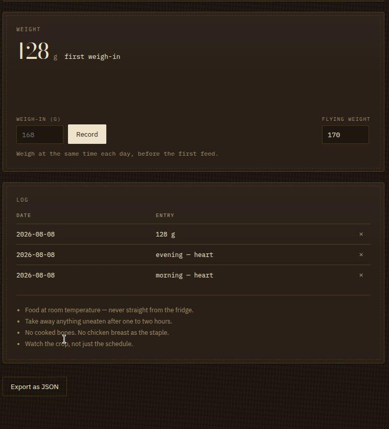

Comet
A feeding tracker for a common kestrel, built around a ten-day cycle instead of a weekly one — for a reason.

What it is
Comet is a kestrel. This is the application that tracks what he eats.
Feeding a bird of prey is not a matter of putting food out. Intake governs weight, weight governs flying condition, and the record has to be exact: what was fed, how much, and when. Chicken heart, liver and breast; day-old chicks; wild sparrows.
The part that drove the design is the ten-day cycle. A weekly rhythm is the obvious choice and it is the wrong one — it locks the same days into the same role every week, which for wild-caught prey means a predictable, repeating draw on local birds. Stretching the cycle to ten days breaks that alignment and reduces the take. The application is built around that period rather than a calendar week, which is precisely why no off-the-shelf tracker fits.
It is one HTML file. No dependencies, no build step, no server, no account. It opens from the filesystem on a phone in a garden with no signal, which is where it is actually used. An earlier version was lost before it was ever saved; this is the rebuild.
Where it fits
Raptor keeping
Precise intake records where weight management is the whole job.
Wild-take reduction
A cycle deliberately offset from the week to lessen pressure on local prey populations.
Field use
Works from a file on a phone with no connection, which is where feeding happens.
Long-term records
Condition tracked across seasons rather than remembered.
Zero maintenance
Nothing to update, expire or subscribe to — the file just keeps working.
Adaptable
A pattern that suits any regime built on an interval other than a week.
6 images




